Toolbars Overview
From Audacity Development Manual
Toolbars provide quick access to many functions in Audacity. In some cases the functions provided by a toolbar are available only through that toolbar.
- All toolbars are enabled by default except: Device Toolbar, Cut/Copy/Paste Toolbar and the Spectral Selection Toolbar.
- If your desired toolbar is not visible, choose and click to put a checkmark by the toolbar you wish to enable.
- The tooltips for the toolbars and tools (visible when hovering over the toolbar or tool in the app) will display the shortcut for that tool/toolbar if one is set.
Customization: the size and position of toolbars can be customized. See Customizing Toolbar Layout for details.
|
Toolbars - upper and lower dock areas
There are two dock areas for toolbars in Audacity.
Toolbars can be arranged and resized within either of the two docks, or floated free of the docks.
Upper Toolbar dock area
- 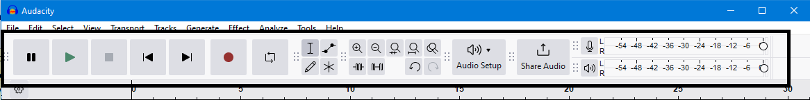
- The Cut/Copy/Paste Toolbar and the Device Toolbar are not shown by default in Audacity.
Lower Toolbar dock area

The individual toolbars are described briefly below. Click on any toolbar title or image to go the details page for that toolbar.
Upper Toolbar dock area
Transport Toolbar

- Controls playback and recording
- skips to start or end of project when neither playing or recording.
Tools Toolbar
- 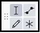
- Chooses various tools for selection, repair and volume adjustment.
- Click on any tool for details of what that tool does.
Edit Toolbar

- The top row has a set of zoom tools: zoom in, zoom out, zoom to selection, zoom to fit project and zoom toggle
- The bottom row has: trim, silence, undo and redo
Cut/Copy/Paste Toolbar

- A toolbar for the functions: Cut, Copy, Paste and Delete.
- This toolbar is not shown by default. Select to show the toolbar, which by default docks in the upper dock.
Audio Setup Toolbar
- 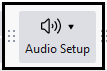
- Gives a menu that manages the setup of the audio input and output devices and adjust the latency of your computer.
- 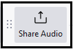
- Enables you to share your audio on-line with others.
Recording Meter Toolbar
- 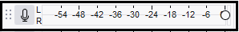
- Displays recording levels and toggles input monitoring when not recording
Playback Meter Toolbar
- 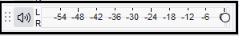
- Displays playback levels
Device Toolbar
- 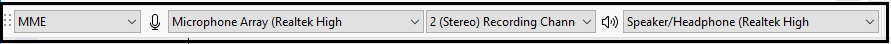
- Selects audio host, recording device, number of recording channels and playback device.
| The Device Toolbar is no longer displayed by default in Audacity. To enable it, click on and check on Device Toolbar. |
Lower Toolbar dock area
Time Signature Toolbar
- 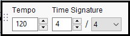
- Sets the Tempo bpm and Time Signature for use when using the Timeline in Beats and Measures display mode.
Snapping Toolbar

- Enables snapping to whole seconds (or other whole time formats).
Time Toolbar
- 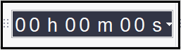
- A read-only toolbar which displays the current audio position.
- When Audacity is not Playing or Recording this will be either the current cursor position or the beginning of the current selection if present.
- When Playing or recording it dynamically shows the current Play head or Record head position
- A read-only toolbar which displays the current audio position.
Selection Toolbar

- Displays the range of the current selection (or cursor position if no selection is present).
- Adjusts cursor and selection region position by keyboard input.
Play-at-Speed Toolbar
- 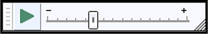
- Plays audio at a slower or faster speed than normal, affecting pitch.
Spectral Selection Toolbar
- 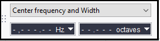
- Displays and lets you adjust the current spectral (frequency) selection without having to be in Spectrogram view.
- This toolbar is not shown by default. Select to show the toolbar, which by default docks in the lower dock.
- Choose your preferred format option from the dropdown menu above the boxes: Center frequency and Width
 or Low and High Frequencies .
or Low and High Frequencies .
In Center frequency and Width view, to clear the spectral selection entirely just use the Delete key after having clicked on any of the digits (note carefully that this is not the Delete key on the numerical keypad). When in Low and High Frequencies view you can clear either input box individually with the Delete key.